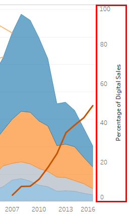

Analysis of the Video Game Industry
Contents
Project Description
The video game industry is growing every year with new products and technologies. Experts expect the industry will be worth $138 billion by the end of 2018. The industry has a bigger impact on our daily lives than we thought. For example, processor and graphics cards manufacturers develop more and more powerful units along the years for us to run the latest game titles. But most users don't use that much power. A humble PC can run any operating system or office software to run our routine non-gaming tasks on PC.
In my project, Analysis of the Video Game Industry, I analyzed 16,715 game titles released in the last 35 years and tried not just to create some visualizations but to give a brief history of the industry as well. During the visualizations, you will see which countries are leading the industry, how the internet has changed it, life cycles/successes/failures of gaming consoles and how game critics affected the sales of video games.
Dataset Description
I used 3 datasets:
Sources:
- Video Game Sales With Ratings, Kaggle (Video_Games_Sales_1980-2016.csv)
- Top 100 Countries/Markets by Game Revenues, newzoo (Markets_by_Game_Revenues-2015-2018.xlsx)
- Electronic Arts and Ubisoft annual reports in 2007-2018 (Packaged And Digital Sales.xlsx)
In Video Game Sales With Ratings, there are 16,715 game titles. The ones that I used are; platform they have been released, sales in North America, Europe and Japan and Critic Scores.
In Top 100 Countries/Markets by Game Revenues, countries listed along with their total revenues. I combined the years 2015, 2016, 2017 and 2018 in one single Excel file. I used relationships (left join by Country) between the sheets, as can be seen below:

In annual reports of Electronic Arts and Ubisoft, I referred to their fiscal year reports between the years 2007-2018. The file contains packaged sales and digital sales, year by year.
All of the sources are public and can be found in the "Datasets" folder in the main folder of the project.
Type: Excel, CSV
Size: 1,59 MB. 16,715 Game Titles
Transformations:
Video Game Sales With Ratings:
- Removed 2 games with no titles
- Added missing "Year"s to some titles
- Updated sales of top titles of 2016
Top 100 Countries/Markets by Game Revenues
- Years 2015, 2016, 2017 and 2018 combined in one Excel file
- Removed decimal separators from "Population", "Internet Population" and "Total Revenues in US Dollars" columns.
Dashboard: Design
Design Rationale
I used bar graph, line (area) graph, stacked bars and scatter plots to create visualizations. All visualizations were created in Tableau Desktop version 2018.2.
Bar Graphs
Bar graphs are a good way to compare values between different groups (Y axis) and track changes over time (X axis). Bar graphs work best when the changes over time are large (but not massive). Data can be visualized both vertically and horizontally. In Top Countries By Game Revenues visualization, I choose bar graphs to show the growth of the industry for the last 4 years.
Possible use cases: Poll results, how Y value changed in X years...
Line Graphs
Line graphs often used to visualize real-time or more frequent ticks of data. Area graphs are a kind of line graphs. Area graphs work the best when comparing two or more related groups. In Global Sales By Year visualization, I choose area graph to determine dramatic ups and downs in the industry.
Possible use cases: Telemetry data, exchange rates...
Word Clouds
Word clouds are used to spot word frequencies. They reflect the topic; for example a word cloud of a political topic contain words like freedom, employment, government while a music topic can contain words like sound, equipment, classical etc.
Possible use cases: Analyzing surveys, creating keywords...
Stacked Bars
Stacked bars are a kind of bar graphs but this time, the bars are divided and can contain more than one variable. In Game Sales by Platforms visualization, there are multiple gaming platforms in one year so I used stacked bars to present them.
Possible use cases: Similar as for bar graphs.
Scatter Plots
Scatter plots (a.k.a. X-Y plots) are used to present relationships between two different values. If both variables increase, it means that they have a positive relationship. If one variable decreases while the other increases, it means that they have a negative relationship. That is just what I needed to present at the Global Sales vs. Average Critic Scores visualization. X level represents the game's critic scores and Y level represents global sales of the game.
Possible use cases: When any relationships need to be visualized.
Cost/Benefit Discussion
Bar Graphs
Benefit: Bar graphs are useful for displaying steady increase or decrease of the data [1]. They are very easy to understand especially when the data is sorted.
Cost: They are not very useful for real-time data since they are not optimal to display small changes in the data. The data should not fluctuate otherwise comparing the data would be difficult.
Line Graphs
Benefit: Line graphs are useful for displaying trends of the data. Y axis could represent anything, but X level ordinarily represents time [2]. They are also a good way to represent intersecting data.
Cost: They can not be sorted through the X axis: the data always flows from left to right.
Word Clouds
Benefit: They are visually appealing. Hundreds of data can be displayed...
Cost: ...but displaying that much data makes more difficult to find a specific one. The size of the word might not be represent the main idea of the topic.
Stacked Bars
Benefit: Stacked bars work well when total and subtotals need to be shown at the same time.
Cost: Too many stacks make the data too complicated to understand.
Scatter Plots
Benefit: Scatter plots are one of the rare visualizations that is used to represent relationships between two (or more) data.
Cost: They are difficult to understand for a novice user. Adding a third measure to the axes makes them even more difficult to understand. Some values may be placed on top of each other [3].
Dashboard: Development
Top Countries By Game Revenues

Development
First, I wanted to combine 4 different Country fields, because different years contain some different countries. I created a new group named Europe and added European countries in it. Then I created a calculated field named Total Value in 4 Years. This field was used to filter the countries by their total market revenues.
I dragged Grouped Countries and Measure Names to Columns. Then I dragged Measure Values to Rows. While holding "Ctrl" key, I dragged Measure Values from the Rows to Filters and selected 2015, 2016, 2017 and 2018. After that, I dragged Total Value in 4 Years to Filters and selected "Sum". I selected "At least 10 000 000 000" as a filter and applied. Then I clicked Grouped Countries in the Rows and sorted as descending order. This sorted the countries by their total revenues in 4 years.
Step-by-step
From the Data pane, select Top 100 Countries-Markets by Game Revenues 2015-2018 source.
Under Dimensions, hold down "Ctrl" key and select all fields named Country, right-click any of it, select Transform>Merge mismatched fields. Name the new field as Grouped Countries and add Europe countries to the new Europe group (image below).

From the Data pane, under Measures, right click to an empty space and select Create>Calculated Field. Name the new field as "Total Value in 4 Years". Enter the calculation below and click Apply.
[Total Revenues in US Dollars]+[Total Revenues in US Dollars (2016)]+[Total Revenues in US Dollars (2017)]+[Total Revenues in US Dollars (2018)]From the Data pane, under Dimensions, hold down the "Ctrl" key, select Grouped Countries and Measure Values to Columns pane.
From the Data pane, under Measures, drag Measure Values to Rows pane.
While holding "Ctrl" key, drag Measure Values from the Rows pane to Filters card. Select 2015, 2016, 2017 and 2018 values only and click Apply.
From the Data pane, under Measures, drag Total Value in 4 Years to Filters card. Select "Sum", click Next, select "At least" and enter "10 000 000 000". Click apply.
Click Grouped Countries on the Columns pane and click Sort Descending button.
Miscellaneous: Colored the bars by while holding "Ctrl" key, dragged Measure Names to Color. Hide Grouped Countries field label. Renamed Measure Values axis as Total Revenues and changed its number format to millions.
Global Sales By Year

Development
I dragged Release Date to Columns and Measure Values to Rows. Then I filtered Measure Values as Europe, Japan, North America and Other Sales. I colored the Measure Names and changed mark type to Area. Then I calculated the percentage of digital sales.
I wanted the show "Percentage of Digital Sales" differently from the Packaged sales because when I used Area for the percentage, it didn't look clear and it made the visualization more complex. To solve this, I used Line as mark type. It looks more clear and eye-catching. Then I changed the percentage axis' range from 0 to 100.
For the last touches, I re-ordered the measures and changed the color palette to "Color Blind".
Step-by-step
From the Data pane, select Video Game Sales source and under Dimensions, drag Release Date to Columns shelf.
From the Columns shelf, right-click Release Date and select Year (the second Year in the list).
From the Data pane, under Measures, drag Measure Values to Rows shelf.
From the Data pane, under Dimensions, drag Measure Names to Filters. Edit filter and select Europe Sales, Japan Sales, North America Sales and Other Sales and apply.
From the Data pane, under Dimensions, drag Measure Names to Color.
On the Marks card, click the Mark Type drop-down and select Area.
From the Data pane, select Packaged And Digital Sales source
Right-click to an empty space on Measures and select Create>Calculated Field. Name the new field as "Percentage of Digital Sales", use the following calculation and click Apply:
([Digital]+[Digital (Ubisoft)])/([Total]+[Total (Ubisoft)])*100Drag this new Percentage of Digital Sales field to Rows shelf. Right click to it and select Dual Axis.
On the Marks card, select SUM(Percentage of Digital Sales), click the Mark Type drop-down and select Line.
Double click on the Percentage of Digital Sales axis to open the Edit Axis dialog box (image below) and select Fixed. Then enter 0 to Fixed start, and 100 to Fixed end.

Miscellaneous: Re-ordered Measure Names, changed the color palette, renamed Y axis to "Number of Packaged Sales (M)". Hide Year of Release Date field label. Added annotations to console release years.
Word Cloud

Development
I used an online word count program to count words in the game titles in the Video Game Sales dataset. Then I saved the results to a new Excel file; games-wordcounts.xlsx. I tried to combine sequences as much as possible, for example, "FIFA 2010" and "FIFA 2011" counted as 1 time, but "FIFA 2010" and "2006 FIFA World Cup Germany" counted 2 times since they are different sequences.
To create a word cloud, I dragged Word to Text on the Marks card. Then I dragged Count to Size and Color. Finally, I changed the font type and size.
Step-by-step
- From the Data pane, select games-wordcounts source and under Dimensions, drag Word to Text on the Marks card.
- From the Data pane, under Measures, drag Count to Size on the Marks card.
- From the Data pane, under Measures, drag Count to Color on the Marks card.
- Miscellaneous: Changed font properties.
Game Sales by Platforms

Development
For this visualization, I tried not to exceed 20 platforms because it would be difficult to show that much color. Because of this, I excluded the least popular platforms and grouped some platforms by their release time (4th Generation etc.).
I dragged Release Date to Columns and Global Sales to Rows. I selected Bar as mark type and dragged Grouped Platforms to Color. This created stacked bars. Then I changed color palette and manually changed some colors to prevent to have similar colors on the same bar.
Step-by-step
- From the Data pane, select Video Game Sales source and under Dimensions, drag Release Date to Columns shelf.
- From the Columns shelf, right-click Release Date and select Year (the second Year in the list).
- From the Data pane, under Measures, drag Global Sales to Rows shelf.
- On the Marks card, click the Mark Type drop-down and select Bar.
- From the Data pane, under Dimensions, drag Grouped Platforms to Color. Select "Add all members".
- Miscellaneous: Excluded less popular platforms e.g. 3DO, GC etc., made the bars thinner, renamed axes, changed and adjusted the color palette.
Global Sales vs. Average Critic Scores

Development
I dragged Critic Score to Columns and changed its measure to Average. Then I dragged Global Sales to Rows. I colored the circles by Platform and dragged Name to Detail to place game titles on the sheet. I selected filled circles for all of the platform. I could use a different shape for each platform, but they looked more complicated when I tried that.
I choose Logarithmic scale to present Global Sales. This made the less sold titles more visible. Finally, I filtered Platform to show 7th generation gaming platforms and changed color scheme to "Color Blind".
Step-by-step
- From the Data pane, select Video Game Sales source and under Measures, drag Critic Score to Columns shelf.
- From the Columns shelf, right-click Critic Score and select Measure>Average.
- From the Data pane, under Measures, drag Global Sales to Rows shelf.
- From the Data pane, under Dimensions, drag Platform to Color. Select "Add all members".
- From the Data pane, under Dimensions, drag Name to Detail. Select "Add all members".
- Double click on the Global Sales axis to open the Edit Axis dialog box and select Fixed. Then enter 0,9, to Fixed start, and 100 to Fixed end. Check Logarithmic and select Positive under the Scale and close the dialog.
- Miscellaneous: Filtered the games before 2000, filtered platforms, filtered games that sold under 100K.
Dashboard: Evaluation
Here I list 5 design guidelines that I used.
[G1.2] Important data should be represented by graphical elements that are more visually distinct than those representing less important information.
In the Global Sales By Year visualization, I used a line unlike the other area values, because the Percentage of Digital Sales value is so important. It is the main reason why Number of Packaged Sales value decreased at that specific time.
[G1.3] Greater numerical quantities should be represented by more distinct graphical elements.
In the Top Countries By Game Revenues visualization, I used faded color for older years and darker color for newer years. This made easier for users to focus on the year we live in. In the Word Cloud visualization, the color is getting darker and the size is getting bigger as the word is used more often.
[G4.1] Use more saturated colors when color coding small symbols, thin lines, or other small areas. Use less saturated colors for coding large areas.
In the Global Sales By Year visualization, the "line area" occupies a large part so I decreased the opacity of the colors to decrease the saturation. In the Global Sales vs. Average Critic Scores I used saturated colors since the circles are small and overlapped.
[G6.16] When using overlapping textures to separate overlapping regions in a display, avoid patterns that can lead to aliasing problems when they are combined.
In the Global Sales vs. Average Critic Scores visualization, there are many overlapping data. I tried to use different shapes but it caused aliasing problems as described in the guideline. So I used the filled circle for all of the categories but changed their color. The shapes are the same but the categories remain distinguishable.
Consistency and standards: Users should not have to wonder whether different words, situations, or actions mean the same thing. Follow platform conventions. (from "Nielsen’s Heuristics")
I tried to stick to a consistent color palette in the visualizations; blue, orange and gray. These colors are also improve accessibility for color blind people. I avoided to use industry-specific terms in the visualizations so that any person that have no idea about the industry can read the visualizations or comment on them.
10 Meaningful Facts
In the Top Countries By Game Revenues, current leader countries can be seen year by year. The first thing to realize that the game revenue is increasing globally. China, U.S.A. and Japan are leading the industry, and Europe, nearly 40 countries combined, can barely compete with these 3 countries.
In the Global Sales By Year, number of game sales visualized as packaged (retail) and digital. Video game industry was fluctuant between the years 1980 - 1993. The sales mostly followed an upwards trend for about 15 years. Major console releases, like PlayStation or Xbox, have boosted the sales.
In the Global Sales By Year, it can be seen that the digital download platforms (e.g. Steam, PlayStation Network) released in 2007 and after a year, packaged sales has begun to decrease. Less than 10 years, Percentage of Digital Sales of companies has reached nearly 50%.
In the Word Cloud, most frequently used words in the game titles grouped. The most used word is "mario", followed by "super", "pokemon" and "dragon". This word cloud can give an idea which game brands are the most popular. Everybody knows Super Mario brand and the word dragon is very common in fantasy games.
In the Game Sales By Platforms, many information can be extracted. Early years, two platforms were dominating the industry: Atari 2600 and NES (Nintendo Entertainment System). A bar in this visualization shows which platforms are popular in that specific year. The most important information we can get is average lifespan of platforms. According to the visualization, a platform's most productive years are between 6-8 years (except PC).
In the Game Sales By Platforms, we can see that when a new successor released for a platform, the game sales still continue to sell for a couple of years. For example, when PlayStation 4 released, PlayStation 3 sales were still high for 3 years.
In the Global Sales vs. Average Critic Scores, game titles displayed by their critic scores (from game reviews) and how much they sold. I used a linear Y axis to represent this visualization because the gaps are too big; the most sold title (Wii Sports, 82,5 Million) has sold twice of the closest title (Mario Kart Wii, 35,5 Million).
The purpose of this visualization is to show how critic scores affect the sales of the video games. It can be seen that the game sales are mostly directly proportional with the critic scores: higher scores means higher sells. But we see some interesting results. When we look at Wii, we can see that many titles with lower scores have sold more than any platform. For example, the best selling game Wii Sports has sold 82,5 Million while its critic score is 76, an average score. On the other hand, we see that the PC titles are mostly scattered at the bottom right side, which means many titles with higher scores have not sold that much.
5 Actionable Insights
- Top Countries By Game Values: The game industry is growing through the years globally and for the last 4 years, 2018 has growth more than previous years. We can find countries that missed that trend and they could be a great market potential such as Australia and Ukraine. The filter needed to be modified to see these countries.
- Global Sales By Year: In the video game industry, many game developers collaborate with game publishers to advertise and deliver huge numbers of physical copies to stores around the globe because these services are so expensive for developers to afford. In return to this, publishers get most of the share from the sales. This chart can be useful for developers because digital advertisement is cheaper and digital download platforms share more profit with the developers. They can see the current trend and evaluate whether it is worth to use retail or not.
- Word Cloud: While naming the video games, it is important to find a unique name. With a word cloud, the most used words can be found.
- Game Sales By Platforms: Which platforms are at the top in the market? How long is it until the end of current generations' life-span. Is there any need to invest in a specific platform? This chart can answer these kinds of questions.
- Global Sales vs. Average Critic Scores: In this visualization, developers can have an idea about how competitive or challenging the platform is. For example, PC platform is competitive because even games with higher critic scores have a risk to sell less. But on Wii platform, an average game can sell more.
2 Valuable Outcomes
- Short-term outcome: The dashboard can give information about the market potential both for countries and platforms. According to the graphs, game industry is growing consistently and doesn't seem to lose this trend soon. Digital sales are increasing and packaged sales are decreasing yet packaged sales are consisting nearly 50% of the sales and it is still worth investing for a few years.
- Long-term outcome: The industry is shifting through the digital inevitably. Companies have to keep up with it to make profit. Platform lifespan can be observed and developers can organize themselves for new platform releases.
References
I used following the web sites as a reference, apart from the course book:
[1] National Center for Education Statistics. How to choose which type of graph to use? URL: https://nces.ed.gov/nceskids/help/user_guide/graph/whentouse.asp
[2] sciencing.com. The Difference Between Bar Graphs and Line Graphs. 2018. URL: https://sciencing.com/difference-bar-graphs-line-graphs-6471264.html
[3] qliq.com. When to use a scatter plot? URL: https://help.qlik.com/en-US/sense/September2017/Subsystems/Hub/Content/Visualizations/ScatterPlot/when-to-use-scatter-plot.htm